The Roman Pilum: Why the Javelin Bent
Roman PilumPilumRoman JavelinWas the Pilum Designed to BendWhy Did the Pilum BendPilum Bend on Impact
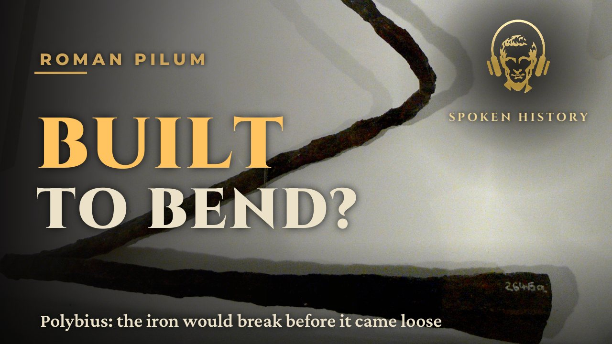
Gaul. 58 B.C. Julius Caesar's legions stand on a hillside. Below them, the Helvetii come up the slope in one dense mass, shield against shield. Caesar sends the horses away, his own first, so that nobody can hope to run. Then his men throw their pila, their heavy javelins, down the hill. Caesar tells us what happened next. In our translation: one blow of a pilum went through several of their shields and pinned them together. And because the iron had bent, they could not pull it out, and they could not fight properly with the left arm held down. Many shook their arm for a long time. Then they let go of the shield, and fought unprotected. That is Caesar's own account of his own victory. And that bent piece of iron became one of the best known stories about the Roman pilum.
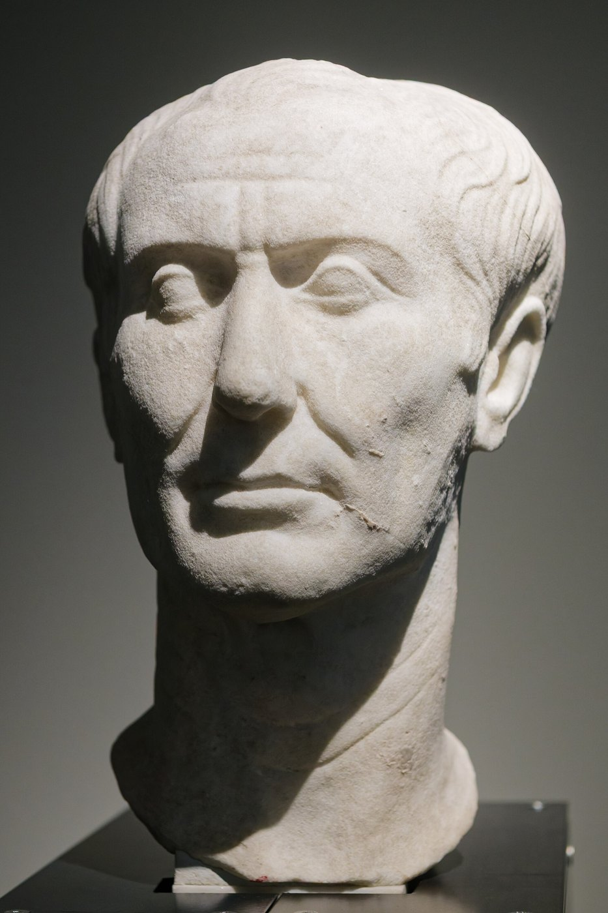
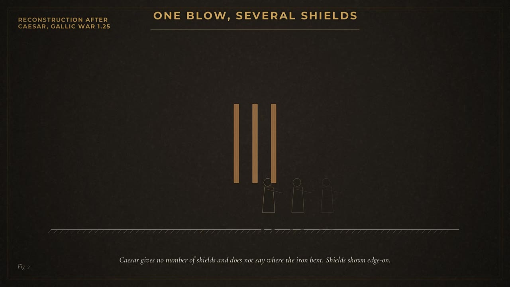
You have probably heard it. The pilum was made to bend on impact, so the enemy could not throw it back. Today: what the pilum was, what has been dug up, and what the texts really say. Because a Greek who knew the Roman army, more than two thousand years ago, tells a different story.
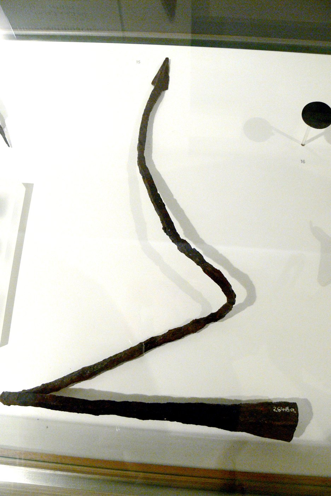
What is a pilum?
So, what is a pilum? A wooden shaft, and on top of it a long, thin iron shank with a small point. This one is in the British Museum. It was found at the Roman fort on Hod Hill, in Dorset, and the museum dates it to the middle of the first century. A small pyramid of a point, and a round iron shank. What survives is about 61 centimetres long, broken at the bottom. With its wooden shaft, says the museum, the whole weapon was about 2 metres long. And the museum's text says what you have probably heard. The long, slender shank was designed to buckle on impact, so the enemy could not use it again.
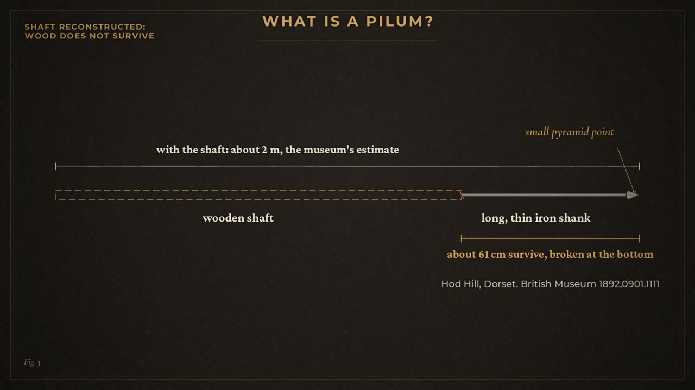
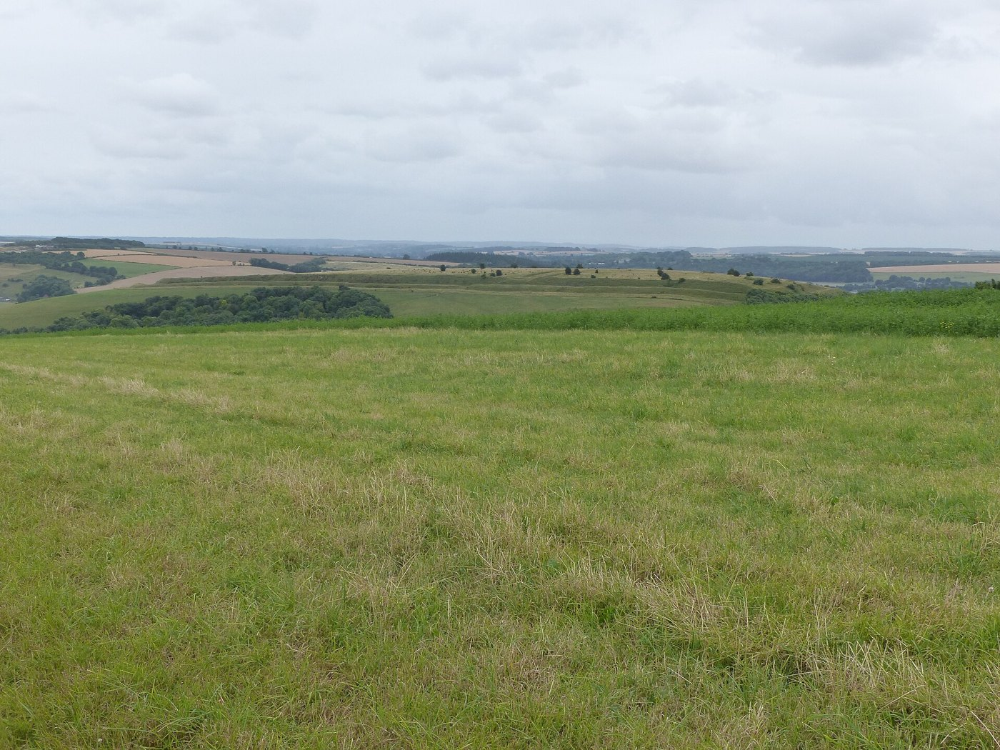
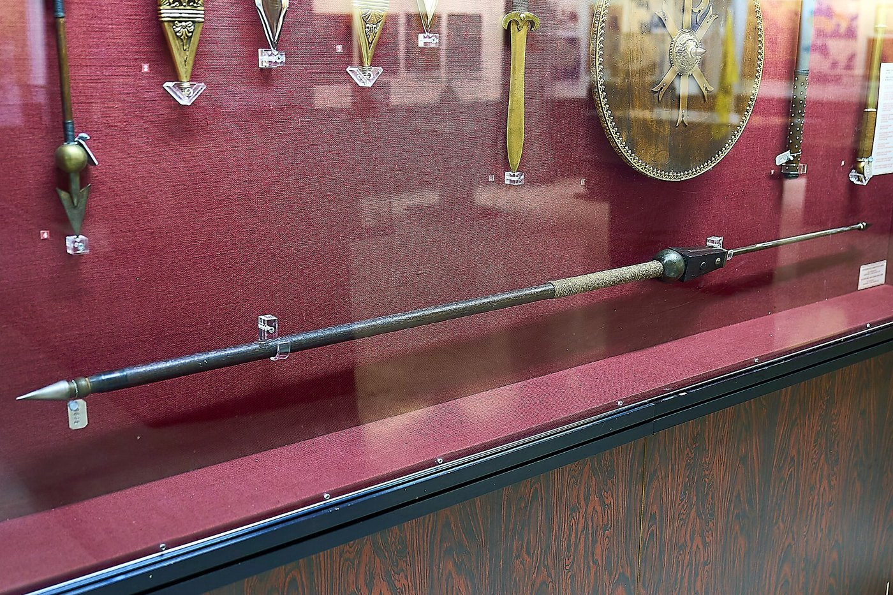
Polybius: riveted so it would not come loose
That Greek is Polybius. He was held in Italy for sixteen years, after Rome defeated Macedon, and later stood beside the Roman general Scipio as Carthage burned. He describes the Roman legion. Of the heavy infantry, all but the oldest men carry two pila each, one stout and one more slender. The wooden shaft, by his measure, is about three cubits long. And the iron head is just as long as the shaft. It is fixed halfway up the wood with many rivets. So firmly, he says, that in battle the iron will break before it comes loose. Break, not bend. What Polybius stresses is how much care the Romans took to fix the iron on.
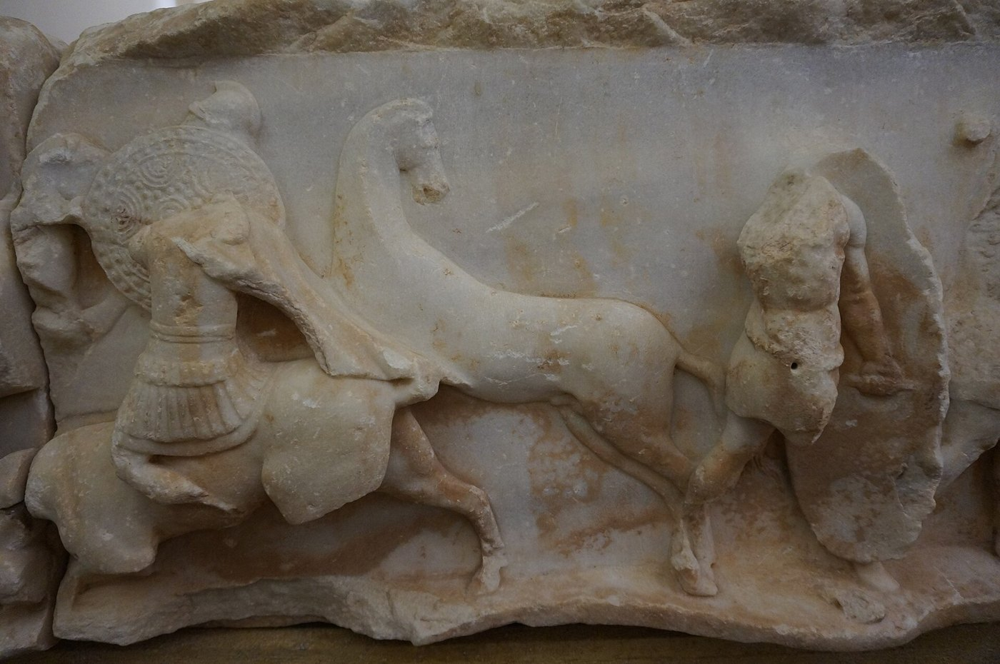
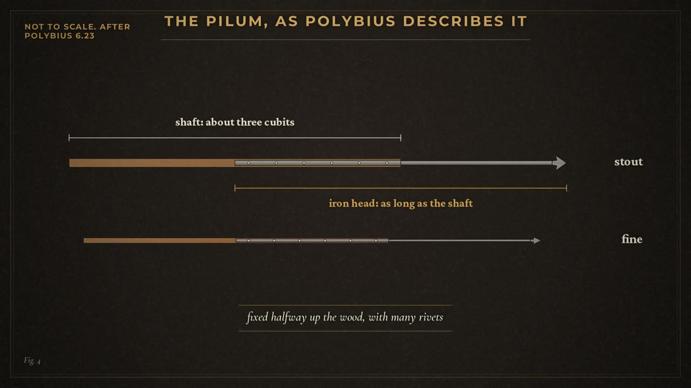
The javelin that was made to bend
But a few lines earlier, Polybius does describe a javelin that was made to bend. It belongs to the velites, the youngest and poorest soldiers, who fight lightly armed. Its iron head, he says, is hammered out so fine that it must bend at the first impact, so the enemy cannot throw it back. Otherwise, he adds, the missile would serve both sides. So the famous fact is in Polybius. But he gives it to a different weapon.
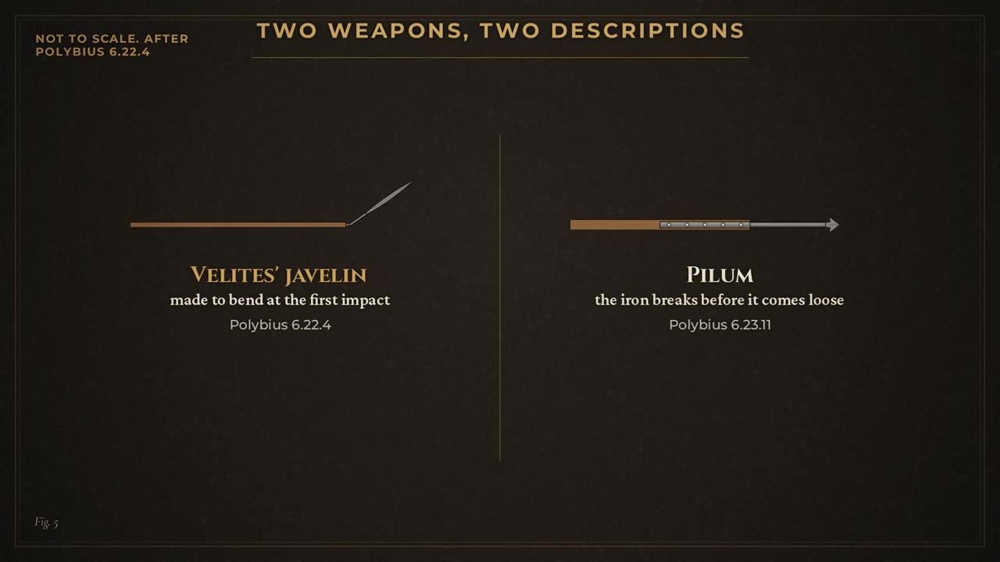
Did you know? The famous javelin that was made to bend, so the enemy could not throw it back, is in Polybius, but it is the light troops' javelin, not the pilum. Of the pilum he says the iron was riveted on so firmly that it would break before it came loose (Polybius, Histories 6.22.4 and 6.23.11).
Polybius and the Gallic swords
And Polybius did not admire weapons that bend. Describing a Roman battle against the Gauls, he claims their swords bent after the first blow, and had to be straightened with the foot. The Romans, he says, thrust with swords that did not bend. A modern study of about a hundred and twenty Celtic swords found he was right only up to a point. More than half of them had at least one edge of harder steel.
What Caesar really says
Back to Caesar, about a century after Polybius. His Latin says: cum ferrum se inflexisset. Because the iron had bent. So Caesar does say the iron bent. He does not say why, or whether anyone meant it to. The archaeologist Mike Bishop, who wrote a book on the pilum, thinks Caesar mentioned the pinned shields because it was unusual, not because it was normal.
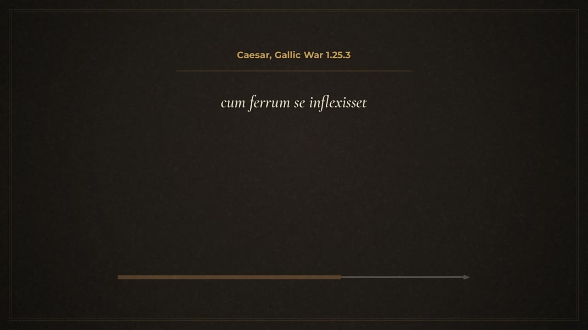
Marius and the wooden pin
Then there is a second story. A battle in northern Italy, against the Cimbri, on the plain of Vercellae. 101 B.C. The Greek writer Plutarch tells it. Until then, he says, the iron head was fixed to the shaft with two iron nails. The general Gaius Marius kept one, and replaced the other with a wooden pin that could easily break. When the javelin hit a shield, the pin would snap. The shaft would swing down at the head and trail along the ground, while the twisted point held fast. Notice what gives way here. Not the iron, but the joint. Plutarch wrote about two hundred years after the battle. He begins with: it is said. And he is our only source for the change. The historian Christopher Matthew thinks the change was real, but that it never became standard.
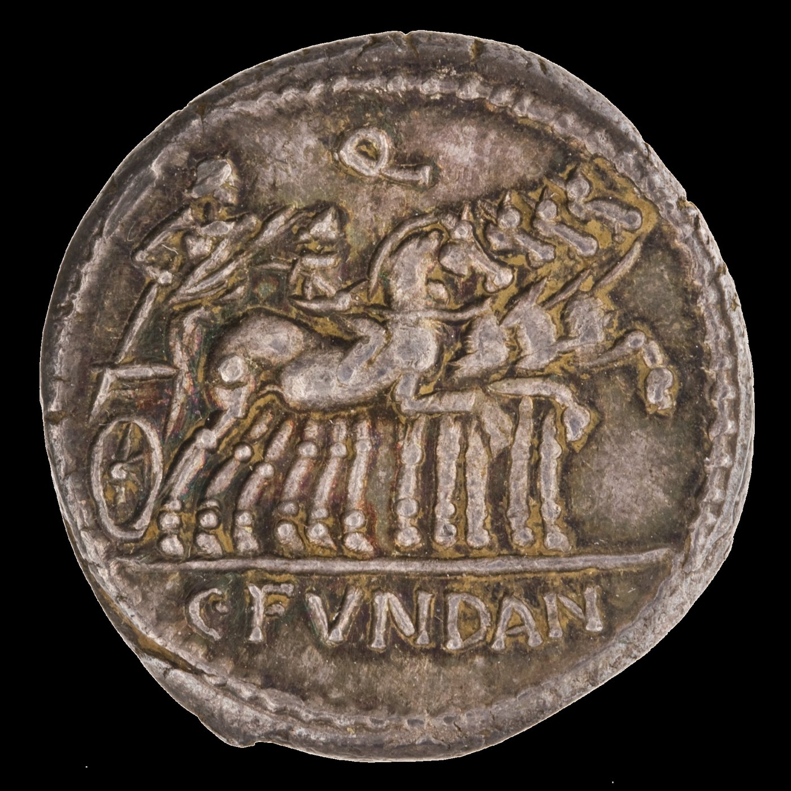
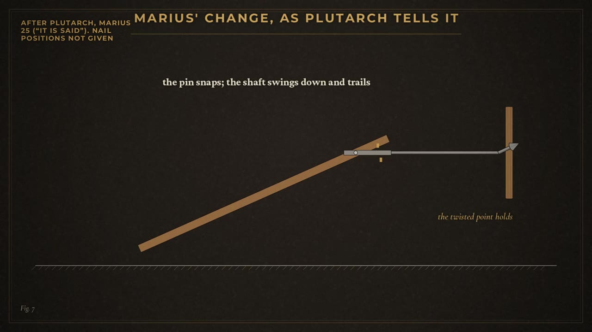
The metal itself: Šmihel
So was the iron left soft on purpose? For that, we need the metal itself. In Slovenia, at a hillfort called Grad, near Šmihel, a hoard of at least 473 iron objects was found. Most of them Roman weapons. It is dated to the end of the third century B.C. or the first half of the second, one of the earliest finds of weapons known for sure to be Roman. Metallurgists cut small samples from two of its pila. Both shanks were soft iron. And one point had been forged with a soft core and a hard skin of steel. Their conclusion: even the earliest pila had a hard point and a soft shank. But they found the other weapons they tested mostly soft as well, and put that down to haste in making them. They doubt the soft shank was there to make the pilum bend. And two pila are a very small sample.
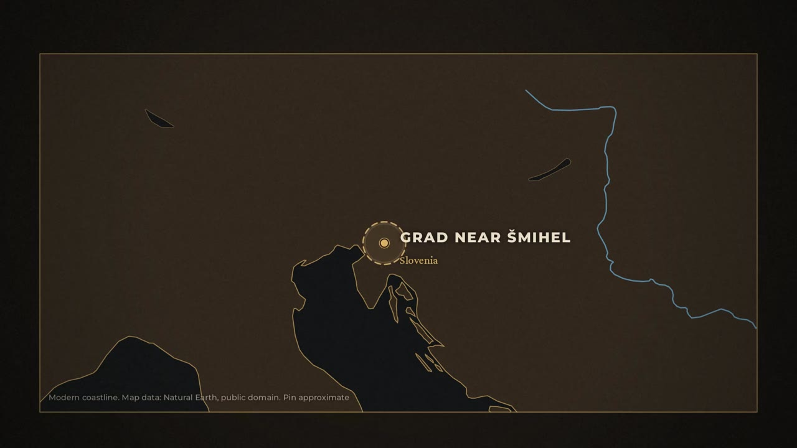
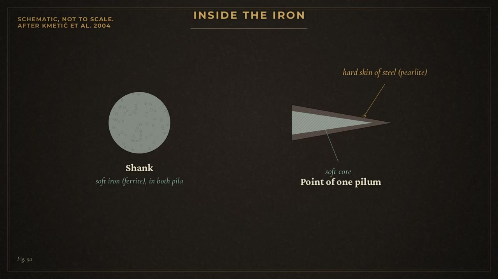
Appian, Arrian and the soft iron
Two later writers do talk about soft iron. Appian, a Greek historian of Rome, says the pilum's iron was soft, except at the point. He does not say why. Arrian, the Roman governor of Cappadocia under the emperor Hadrian, wrote out an order of battle against a people called the Alans. His front ranks carry spears with long, very thin iron points. In our translation: stuck in a shield or a breastplate, the iron bends because it is soft, and the rider is put out of action. It sounds like a pilum. But Arrian, writing in Greek, does not use that word. And he says what soft iron does, not why it was made that way.
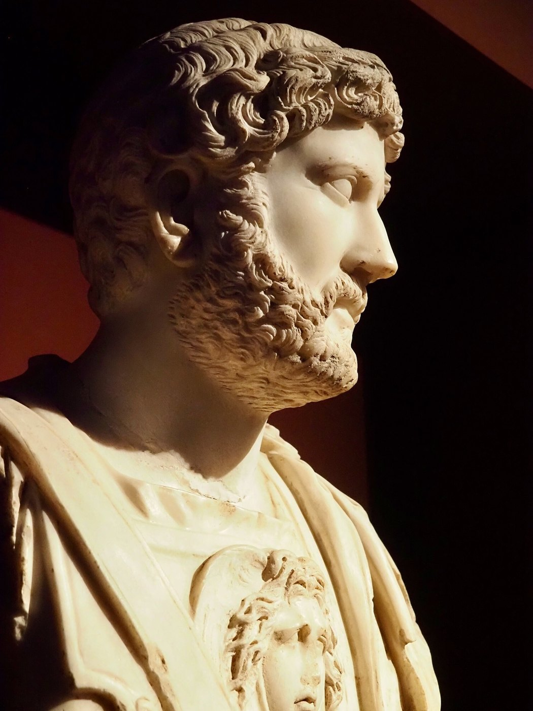
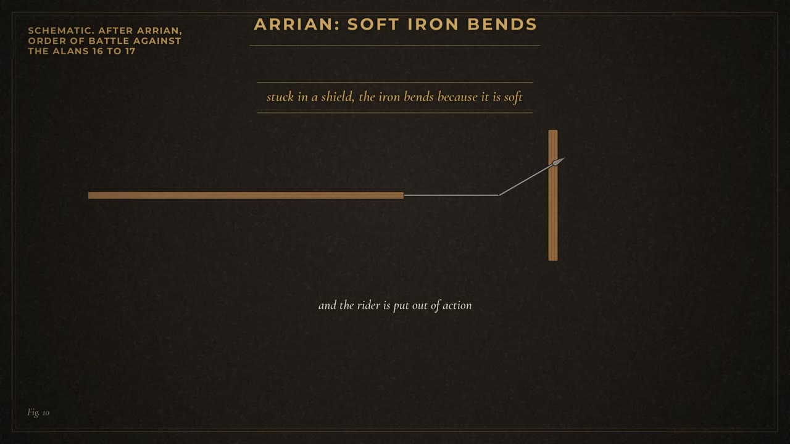
Throwing tests
So would a pilum really bend when it hit? Mike Bishop and David Sim, a blacksmith and a specialist in Roman metalworking, tested it. First, in drop tests against a shield of planks, iron points and steel points went in exactly as far. Then they threw them. Stuck in a shield, or in the ground, the pila refused to bend. They did bend when someone shook the shield, or grabbed the pilum and pulled. Right below the head. And the tip bent when it bounced off. Bishop's view: the pilum was not made to stick in a shield. It was made to go through the shield, and into the man behind it.
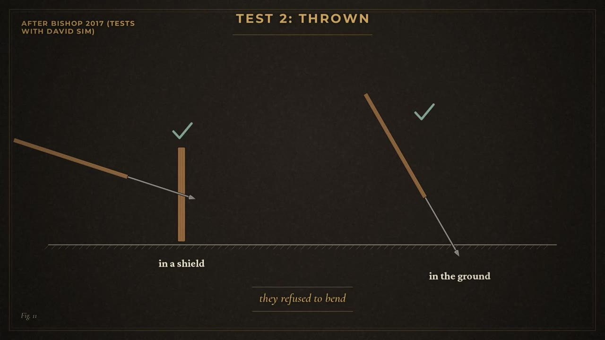
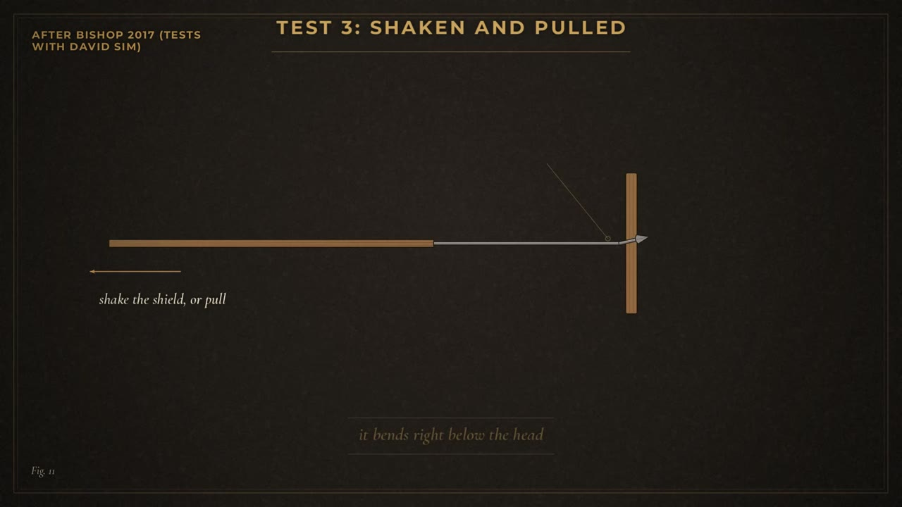
The thirty degree bend
But one kind of bend would not appear. Many excavated pila are bent about 30 degrees, in the middle of the shank. Then they noticed. That is the angle of a pilum stuck in the ground after a throw. So they trod on them, the way soldiers might flatten a field of shafts to get through it. And the bend appeared. Bishop is careful. That shows it could have happened this way, not that it did. And each time, David Sim stepped into his forge and fixed the damage in seconds. A bent pilum could not be thrown straight back. But it was a weapon you could use again.
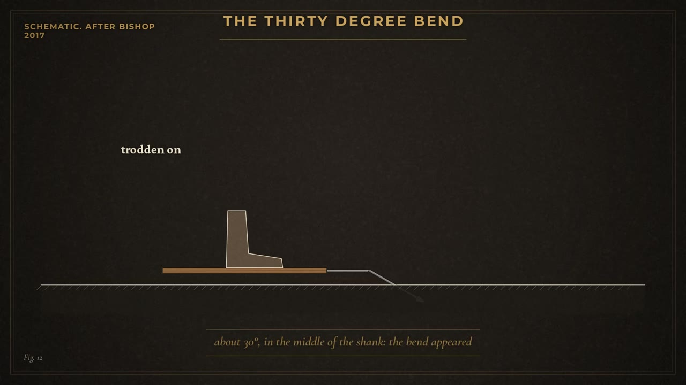
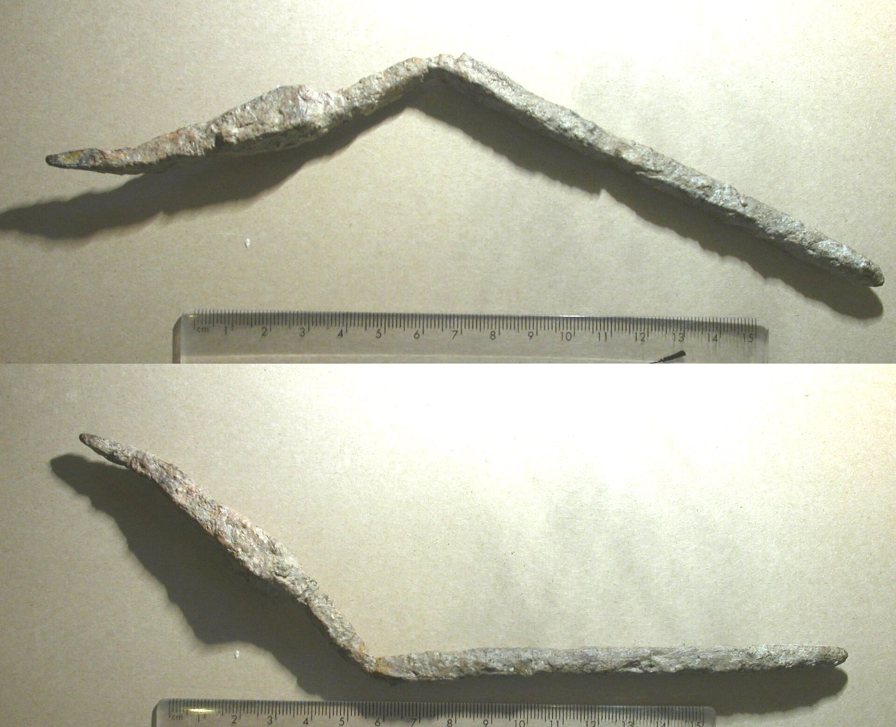
Did you know? In Mike Bishop and David Sim's tests, thrown pila would not bend, but treading on pila stuck in the ground gave the bend of about 30 degrees seen on many excavated pila. Bishop is careful: it could have happened this way, not that it did (M. C. Bishop, 2017).
Bar Hill: heads in a well
Which brings us to Scotland. Bar Hill, a fort on the Antonine Wall, the frontier that for about twenty years took the place of Hadrian's Wall. More than a century ago, its excavators found the well, filled up on purpose. In it lay 22 small, square iron points. Every tang snapped off. And every point bent and blunted by use. At first they took them for masons' tools. Then for the spikes on the butt end of spears. A longer piece from the ditch outside the east gate gave them a clue. Carefully, they called them broken heads of pila. Why twenty-two broken pilum heads ended up in a well, we do not know.
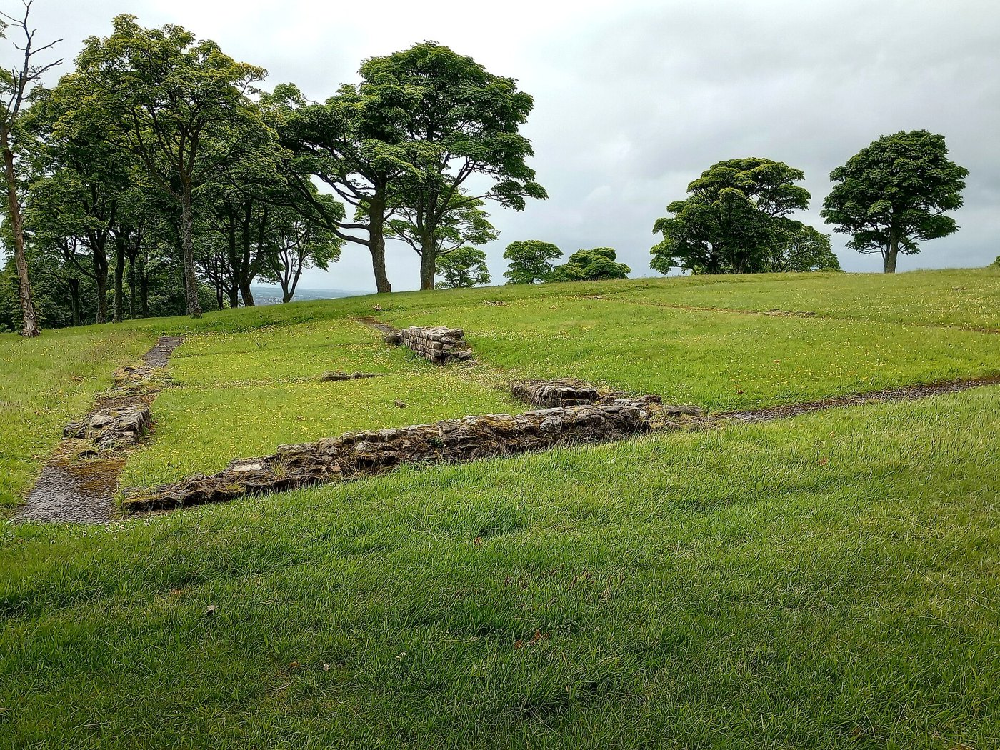
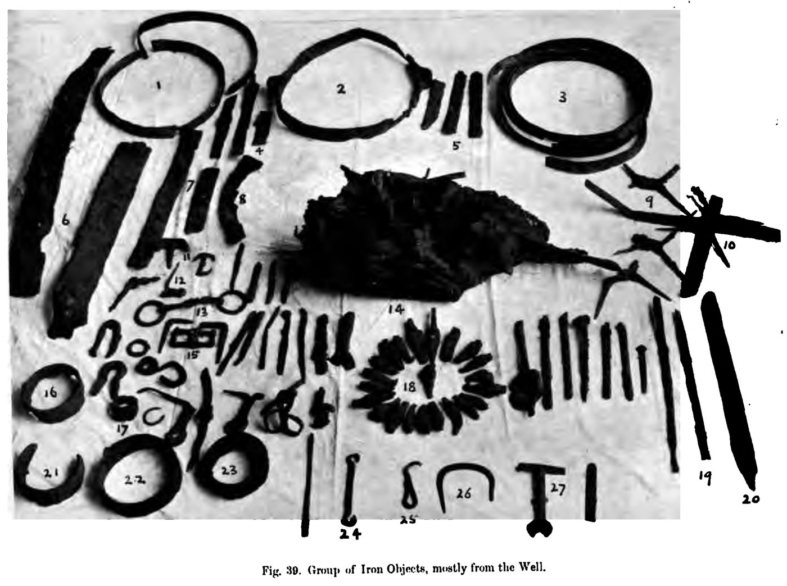
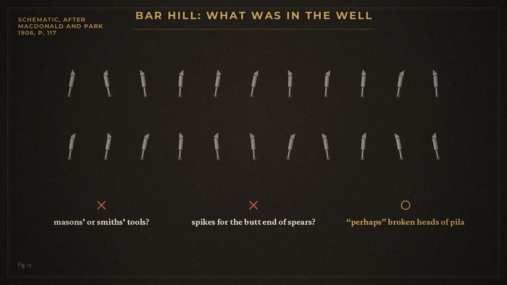
Did you know? Twenty-two small iron points, every tang snapped off and every point bent and blunted by use, lay in the well of the fort at Bar Hill on the Antonine Wall. The excavators first took them for masons' tools; a longer piece from the ditch outside the east gate led them to call them, carefully, broken heads of pila (Macdonald and Park 1906).
A new name
In the end, the pilum faded. By the time of Vegetius, a late Roman writer of the late fourth or the fifth century, even the name had gone. What was once called the pilum, he writes, is now called the spiculum. And weapons of that old kind, he admits, are now rare among us.
So, was it designed to bend?
So, was the pilum designed to bend? The British Museum's text says yes. The metallurgists who studied the Slovenian hoard found a hard point and a soft shank from the very start, but they doubt it was meant to bend. Mike Bishop's tests say a pilum that sticks after a throw does not bend by itself. It bends when people pull at it, or tread on it. And none of these ancient writers says the Romans made the pilum's iron soft so that it would bend. That is a modern reading. Nobody can prove it, and nobody can rule it out.
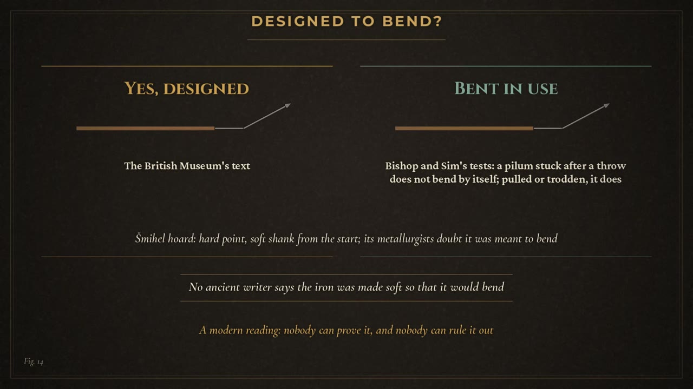
What we really have
So, what do we really have? A commander who says the iron bent. A historian who says the iron would break before it came loose. A wooden pin, two centuries later. Two soft shanks, bent heads in a well, and modern tests in which a pilum stuck after a throw would not bend by itself.
Verdict, and two questions
So that's the Roman pilum. My reading of the evidence: a javelin made to punch through a shield and into the man behind it. The bending came after, when men pulled at it, or walked over it. But that is a reading, not a proof.
The website
Every episode has an article on spoken-history.chronas.org, with every source and every image credit. Open the map to see where each story happened, or drag the slider to pick a period. Pick any topic, and it leads you to every episode that covers it. The link is in the description.
Over to you
What do you think: was the pilum designed to bend, or did it only bend in use? Bar Hill: why would anyone throw twenty-two broken pilum heads into a well?
Prefer to watch? The video on YouTube covers the same story with the full animations. Jump to a part:
- 0:00 Caesar's battle, 58 B.C.
- 1:22 What is a pilum?
- 2:03 Polybius: riveted so it would not come loose
- 2:48 The javelin that was made to bend
- 3:18 Polybius and the Gallic swords
- 3:44 What Caesar really says
- 4:08 Marius and the wooden pin
- 5:08 The metal itself: Šmihel
- 6:05 Appian, Arrian and the soft iron
- 6:48 Throwing tests
- 7:29 The thirty degree bend
- 8:08 Bar Hill: heads in a well
- 8:51 A new name
- 9:10 So, was it designed to bend?
- 9:46 What we really have
- 10:05 Verdict, and two questions
- 10:33 The website
Quick answers
What is a Roman pilum?
A heavy Roman javelin: a wooden shaft and, on top of it, a long, thin iron shank with a small point. The pilum head from the Roman fort on Hod Hill in Dorset, in the British Museum and dated by the museum to the middle of the first century A.D., survives to about 61 centimetres, broken at the bottom. With its wooden shaft, says the museum, the whole weapon was about 2 metres long.
Was the pilum designed to bend on impact?
Nobody can prove it, and nobody can rule it out. The British Museum's text says yes. The metallurgists who studied the Šmihel hoard found a hard point and a soft shank from the very start, but they doubt it was meant to bend. Mike Bishop's tests say a pilum that sticks after a throw does not bend by itself; it bends when people pull at it, or tread on it. And none of the ancient writers says the Romans made the iron soft so that it would bend: that is a modern reading.
What does Polybius say about the pilum?
Polybius says the iron head was fixed halfway up the wooden shaft with many rivets, so firmly that in battle the iron will break before it comes loose. The javelin he says was made to bend at the first impact, so the enemy could not throw it back, belongs to the velites, the youngest and poorest soldiers, who fought lightly armed.
What does Caesar say about the bent pilum?
In his Gallic War (1.25), Caesar says one blow of a pilum went through several of the Helvetii's shields and pinned them together, and because the iron had bent, they could not pull it out. He does not say why the iron bent, or whether anyone meant it to.
What did Marius change about the pilum?
Plutarch, writing about two hundred years after the battle of 101 B.C. and beginning with "it is said", tells that the iron head had been fixed with two iron nails, and that Gaius Marius kept one and replaced the other with a wooden pin that could easily break. On impact the pin snapped and the shaft swung down and trailed on the ground. Plutarch is our only source for the change; the historian Christopher Matthew thinks it was real but never became standard.
Where it happened
- Near Bibracte (Mont Beuvray) (58 B.C.): Caesar fought the Helvetii near Bibracte (Gallic War 1.23 to 26); the exact site of the battle is uncertain, so the pin marks Bibracte.
- Hod Hill, Dorset (A.D. 50): Roman fort site where the British Museum's pilum head 1892,0901.1111 was found; the museum dates it to the middle of the first century A.D.
- Grad near Šmihel, Slovenia (200 B.C.): Hillfort with a hoard of at least 473 iron objects, mostly Roman weapons, dated to the end of the 3rd or the first half of the 2nd century B.C. Pin approximate.
- Plain of Vercellae, northern Italy (101 B.C.): Marius against the Cimbri, 101 B.C., where Plutarch places the change to the pilum; the exact site of the battle is uncertain, pin approximate.
- Carthage (146 B.C.): Polybius stood beside Scipio as Carthage burned in 146 B.C.
- Bar Hill, Antonine Wall (A.D. 150): Roman fort on the Antonine Wall; its excavators (report 1906) found 22 bent iron points, probably broken pilum heads, in its well. Year: the Wall's use in the mid 2nd century A.D.
Sources
Ancient writers and modern work
All pages below were read on 2026-11-16. "Read" means the text itself was read (the full passage, in the original and/or a named translation);
"abstract" means only an abstract, a publisher's description or a search summary was available, and the narration hedges accordingly.
Translations marked "our translation" are ours, made from the Latin or Greek given. Claim-by-claim tags: `claims.md`.
Ancient texts
1. **Polybius, Histories 6.21 to 6.23** (the levy and the arms of the legion). English: W. R. Paton, Loeb Classical Library (1922 to 1927), on
LacusCurtius, https://penelope.uchicago.edu/Thayer/E/Roman/Texts/Polybius/6*.html. Read.
- 6.22.4 (the velites, the youngest and poorest soldiers): "The wooden shaft of the javelin measures about two cubits in length and is about a
finger's breadth in thickness; its head is a span long hammered out to such a fine edge that it is necessarily bent by the first impact, and the
enemy is unable to return it. If this were not so, the missile would be available for both sides."
- 6.23.8 to 11 (the hastati; 6.23.14: the principes armed the same way, the triarii with long spears instead of pila): "they have two pila ...
The pila are of two sorts, stout and fine ... the length of the haft in all cases being about three cubits. Each is fitted with a barbed iron
head of the same length as the haft. This they attach so securely to the haft, carrying the attachment halfway up the latter and fixing it with
numerous rivets, that in action the iron will break sooner than become detached, although its thickness at the bottom where it comes in contact
with the wood is a finger's breadth and a half; such great care do they take about attaching it firmly."
2. **Polybius, Histories 2.33** (battle against the Insubres, 223 B.C., consul Flaminius): Gallic swords "only the first cut takes effect; after
this they at once assume the shape of a strigil, being so much bent ... that unless the men are given leisure to rest them on the ground and set
them straight with the foot, the second blow is quite ineffectual"; the Romans thrust "with their swords which did not bend". Paton, LacusCurtius,
https://penelope.uchicago.edu/Thayer/E/Roman/Texts/Polybius/2*.html. Read.
3. **On Polybius:** Paton's Loeb introduction, LacusCurtius, https://penelope.uchicago.edu/Thayer/E/Roman/Texts/Polybius/Introduction*.html:
born about 208 B.C. at Megalopolis; one of a thousand Achaeans taken to Italy after Pydna (168 B.C.); from 167 lived in Rome in the house of
Aemilius Paulus; "stood by Scipio's side while Carthage was burning (146 B.C.)". Read.
4. **Caesar, Gallic War 1.23 to 1.26** (the battle with the Helvetii near Bibracte). Latin: The Latin Library,
https://www.thelatinlibrary.com/caesar/gall1.shtml. Read. 1.25.2 to 4: "Milites loco superiore pilis missis facile hostium phalangem
perfregerunt ... Gallis magno ad pugnam erat impedimento quod pluribus eorum scutis uno ictu pilorum transfixis et conligatis, cum ferrum se
inflexisset, neque evellere neque sinistra impedita satis commode pugnare poterant, multi ut diu iactato bracchio praeoptarent scutum manu
emittere et nudo corpore pugnare." English in the video: our translation. 1.24.4: the Helvetii came on in a very close formation ("confertissima
acie, ... phalange facta"). The year: the book opens the campaign under the consuls L. Piso and A. Gabinius (1.6.4), that is 58 B.C. in the
standard chronology. 1.26.2: the fight lasted "from the seventh hour until evening".
5. **Plutarch, Life of Marius 25.1 to 2.** English: Bernadotte Perrin, Loeb Classical Library 1920, LacusCurtius,
https://penelope.uchicago.edu/Thayer/E/Roman/Texts/Plutarch/Lives/Marius*.html. Read. "And it is said that it was in preparation for this
battle that Marius introduced an innovation in the structure of the javelin. Up to this time, it seems, that part of the shaft which was let into
the iron head was fastened there by two iron nails; but now, leaving one of these as it was, Marius removed the other, and put in its place a
wooden pin that could easily be broken. His design was that the javelin, after striking the enemy's shield, should not stand straight out, but
that the wooden peg should break, thus allowing the shaft to bend in the iron head and trail along the ground, being held fast by the twist at the
point of the weapon." The battle is the one against the Cimbri on the plain of Vercellae (25.3).
6. **On Plutarch:** Perrin's Loeb introduction (1914), LacusCurtius, https://penelope.uchicago.edu/Thayer/E/Roman/Texts/Plutarch/Lives/Introduction*.html:
born "about the middle of the first century of our era", died "about 120 A.D."; the Lives written after most of the Moralia. Read.
7. **Arrian, Order of Battle against the Alans (Ektaxis kata Alanon) 16 to 17.** Greek: ed. R. Hercher and A. Eberhard, Perseus Digital Library,
https://github.com/PerseusDL/canonical-greekLit (tlg0074.tlg006.perseus-grc2.xml, CC BY-SA). Read in Greek. The first four ranks are
"kontophoroi, whose spears have long and very thin iron points projecting" (ὧν δὴ τοῖς κοντοῖς μακρὰ καὶ ἐπίλεπτα τὰ σιδήρια προῆκται); the
second to fourth ranks throw them, "wounding horses and killing riders, or, when the spear has stuck in a shield or breastplate and the iron has
bent because of its softness (διὰ μαλθακότητα τοῦ σιδήρου ἐπικαμφθέντος), making the rider useless". Our translation. Arrian calls the weapon
kontos, not pilum.
8. **Cassius Dio 69.15.1** (the Alani war after the Jewish war, stopped partly because they "stood in dread of Flavius Arrianus, the governor of
Cappadocia"). E. Cary, Loeb, LacusCurtius, https://penelope.uchicago.edu/Thayer/E/Roman/Texts/Cassius_Dio/69*.html. Read.
9. **Vegetius, Epitome of Military Science 1.20 and 2.15.** Latin: The Latin Library, https://www.thelatinlibrary.com/vegetius1.html and
vegetius2.html. Read. 1.20: "pila uocabantur, ferro subtili trigono praefixa unciarum nouem siue pedali, quod in scuto fixum non possit
abscidi ... cuius generis apud nos iam rara sunt tela" (weapons of this kind are now rare among us). 2.15: the larger missile, "ferro triangulo
unciarum nouem, hastili pedum quinque semis, quod pilum uocabant, nunc spiculum dicitur". Our translation.
10. **On Vegetius' date:** E. L. Wheeler, review of M. B. Charles, Vegetius in Context (2007), Bryn Mawr Classical Review 2008.06.42,
https://bmcr.brynmawr.edu/?p=25992: after 383 (Gratian called divus, 1.20) and before 450; Theodosius I and Valentinian III "the scholarly
favorites". Read.
18. **Appian, Gallic History (Celtica), fragment 1** (the dictator Gaius Sulpicius against the Boii; 358 B.C. after Schulten, as cited in 12).
Greek: Perseus/Perseids, https://cts.perseids.org/read/greekLit/tlg0551/tlg005/perseus-grc2/I ; English: H. White, Loeb 1912,
https://cts.perseids.org/read/greekLit/tlg0551/tlg005/perseus-eng2/I . Read in Greek by the fact-checker, 2026-11-17: "τὰ δὲ δόρατα ἦν οὐκ
ἀπεοικότα ἀκοντίοις· ἃ Ῥωμαῖοι καλοῦσιν ὑσσούς, ξύλου τετραγώνου τὸ ἥμισυ, καὶ τὸ ἄλλο σιδήρου, τετραγώνου καὶ τοῦδε καὶ μαλακοῦ χωρίς γε τῆς
αἰχμῆς" (the spears, not unlike javelins, which the Romans call hyssoi [the Greek word for pila, as in Polybius 6.23]: half of square wood, the
rest of iron, square too, and soft except at the point). Our translation. White's English ("The spears of the Gauls ...") misreads the context:
the weapons are the Romans'. No reason for the softness is given. Appian wrote in the 2nd century A.D.
Finds, museum records and excavation reports
11. **British Museum 1892,0901.1111**, "iron pilium head. A small, pyramidal head, and a round-sectioned shank broken at its lower end"; Hod Hill;
"1stC(mid)"; length 609.60 mm; on display G49, case 6. Curator's comment (shared with 1892,0901.1110, two heads): "From the Roman fort site at
Hod Hill, Dorset. The pilum, or javelin was carried by legionary soldiers. It had a wooden shaft and an iron head giving a total length of about
two metres. The small bolt-like tip was highly penetrating and the long slender iron shank, which was designed to buckle on impact, prevented it
being re-used by the enemy." References: Manning 1985; Brailsford 1962. The live page returned 403; read through the Internet Archive copy of
27 January 2022, http://web.archive.org/web/20220127140643/https://www.britishmuseum.org/collection/object/H_1892-0901-1111. Read.
Record 1892,0901.1110 could not be opened (403, no archive copy): not used beyond the shared comment.
12. **D. Kmetič, J. Horvat and F. Vodopivec, "Metallographic examinations of the Roman Republican weapons from the hoard from Grad near Šmihel",
Arheološki vestnik 55 (2004), 291 to 312**, https://ojs.zrc-sazu.si/av/article/view/8341 (PDF read). The hoard: at least 473 iron objects,
mostly Roman weapons (pila, javelins, catapult bolts, arrowheads, swords), "dated to the end of the 3rd or in the first half of the 2nd century
BC", "one of the earliest closed finds of weapons reliably known to be Roman" (after Horvat 2002). Five objects sampled; "The shafts of two pila
with flat hafts also have a ferrite microstructure. The point of one of the pila is made from a soft (ferrite) center and a hard pearlite layer on
the surface. Evidently the earliest pila already had a hard point with a soft shaft, as was noted in much later historical sources. The
relatively poor quality of the weapons (soft steel) is explained by the rapidity of production". Read.
Re-read by the fact-checker 2026-11-17 (PDF https://ojs.zrc-sazu.si/av/article/download/8341/7705/22814). Also used: p. 306, "The combination
of hard point - soft shaft probably did not occur because of a wish for quick deformation of the shaft. Rather this would confirm Connolly's idea
that this type of short pilum was actually a defensive weapon" (the two sampled pila are the short type 1 with a flat haft); p. 305, the soft
steel "deliberately chosen" for "the quickest production"; p. 304, after Pleiner 1993: "The metallographic analysis of 122 Celtic swords ...
More than half of the swords had at least one blade from middle carbon (0.3-0.5% C ...) or high carbon steel"; p. 305 to 306, Appian
(Celt. 1) "specifically stated that the complete pilum, with the exception of the point, was made from soft steel".
13. **G. Macdonald and A. Park, The Roman Forts on the Bar Hill, Dumbartonshire (Glasgow 1906)**, pp. 116 to 118, Internet Archive
https://archive.org/details/romanfortsonbar00parkgoog (OCR text read). The well "had plainly been filled up of set purpose"; from it "twenty-two
wedge-shaped articles ... Each consists of a square head and a short square tang, the latter invariably broken ... in every instance the point
has been bent and blunted by use"; first thought to be "masons' or smiths' tools", then "spikes ... attached to the lower ends of
spear-shafts"; four more from the ditch at the east gate, one with a tang "rather more than twice as much as the head"; "we shall perhaps be
justified in regarding the whole of the twenty-six objects in question as broken heads of pila". The fort is the Antonine fort (chapter IV). Read.
Modern scholarship
14. **M. C. Bishop, "The Pilum", Osprey Publishing blog, 30 May 2017**, https://www.ospreypublishing.com/uk/osprey-blog/2017/the-pilum/ (Bishop's
own summary of the tests for his book The Pilum: The Roman Heavy Javelin, Osprey Weapon 55, 2017, made with Dr David Sim, "a specialist on Roman
metalworking and a practising blacksmith"). Read. Points used: drop tests into simulated shields; "steel and iron heads had exactly the same
penetrative power against a simulated plank shield"; the "designed to stick in the enemy's shield" idea a myth, the design "meant to penetrate
the shield and stick in the person behind it"; Caesar mentioned the pinned shields "because it was unusual, rather than normal"; "when thrown,
pila resolutely refused to bend whether they were stuck in a shield or the ground"; shaking or pulling "caused bending immediately below the
head"; tips bent when they bounced off; the 30 degree mid-shank bend "stubbornly refused to appear" until they trod pila stuck in the ground flat,
which reproduced it ("this just means that it could have happened in this way, not that it definitely did"); damage "rectified in seconds" at
the forge, so "a reusable weapon"; weights added to the pilum in the first century A.D. against ply shields; range not tested ("never raised as an
issue by ancient commentators"). The book itself was NOT read; the full report announced for JRMES was not found.
15. **C. Matthew, "The Battle of Vercellae and the Alteration of the Heavy Javelin (Pilum) by Gaius Marius, 101 BC", Antichthon 44 (2010) 50 to
67**, https://www.cambridge.org/core/journals/antichthon/article/abs/battle-of-vercellae-and-the-alteration-of-the-heavy-javelin-pilum-by-gaius-marius-101-bc/25E9ABE7203DB3178C959268C1C72E15.
Abstract only: the change was made in 101 B.C.; unlike his other reforms it did not become standard; Matthew argues it was lost to later
political and military events, not dropped for lack of tactical value.
16. **H. Föll, "Metallurgy of Celtic Swords" (Iron, Steel and Swords script, University of Kiel)**,
https://www.tf.uni-kiel.de/matwis/amat/iss/kap_b/backbone/rb_2_2.html. Read. On Polybius 2.33: R. Pleiner studied about 120 La Tène swords
(400 to 200 B.C.), about 60 % with hard (steel) edges; Föll: Polybius right "up to a point", a point "actually rather low".
17. **D. J. Breeze, History of Hadrian's Wall (English Heritage)**, as read for the Hadrian's Wall episode (its sources.md no. 11): Antoninus Pius
built a new wall in Scotland, with a short life of about 20 years. Used only to place Bar Hill.
Image credits
- Roman pilum, bent. Archaeological Museum Gunzenhausen, Bavaria. Photo: Wolfgang Sauber, CC BY-SA 3.0
- Head of Julius Caesar from Tusculum. Museo di Antichità, Turin. Photo: Marie-Lan Taÿ Pamart, public domain (background extended)
- Silver denarius of Julius Caesar, 44 B.C., CAESAR IMP. American Numismatic Society 1937.158.290, CC0
- Cast of a relief from Kleitor, Arcadia, thought to show Polybius. Photo published 1881, public domain
- Monument of Aemilius Paullus at Delphi, frieze, after 168 B.C. Photo: Colin Whiting, CC BY-SA 4.0
- The ramparts of Hod Hill, Dorset, today. Photo: Peter Neaum, CC BY 3.0
- Iron point, possibly from a pilum, bent; A.D. 100 to 200, England. Portable Antiquities Scheme (Buckinghamshire County Council), CC BY-SA 2.0
- Frieze of the monument of Aemilius Paullus at Delphi: drawing, Reinach 1909. Public domain
- Iron swords of the La Tène culture, Bohemia. National Museum, Prague. Photo: Zde, CC BY-SA 4.0
- Head of Julius Caesar from Tusculum. Museo di Antichità, Turin. Photo: Marie-Lan Taÿ Pamart, public domain
- Denarius of Gaius Fundanius, 101 B.C.: a general in a triumphal chariot, often identified as Marius. American Numismatic Society, public domain
- Stele naming Plutarch, set up at Delphi about A.D. 100. Archaeological Museum of Delphi. Photo: Zde, CC BY-SA 4.0
- Roman soldiers on the so-called Altar of Domitius Ahenobarbus, Louvre. Late Republic; its date is debated. Photo: Miketaylor30, CC BY-SA 3.0
- Replica of a Roman pilum. Athens War Museum. Photo: George E. Koronaios, CC BY-SA 4.0
- Iron shank recorded as part of a Roman pilum head, A.D. 100 to 300, England (four views). Portable Antiquities Scheme (Bristol City Council), CC BY-SA 4.0
- Marble bust of the emperor Hadrian, Archaeological Museum of Seville. Photo: Laci3, CC0
- Bar Hill Roman fort, Antonine Wall, today. Photo: Jim Smillie, CC BY-SA 2.0
- Iron finds from the Bar Hill well; No. 18: the twenty-two points. Photograph, Macdonald and Park 1906, fig. 39. Public domain
- Bar Hill finds; No. 4: the longer piece from the ditch at the east gate. Macdonald and Park 1906, fig. 40. Public domain
- The twenty-two points from the Bar Hill well. Photograph, Macdonald and Park 1906, fig. 39, No. 18. Public domain
- The line of the Antonine Wall at Bar Hill, today. Photo: Alan O'Dowd, CC BY-SA 2.0
- Vegetius' handbook in a ninth-century copy. Vatican Library, Pal. lat. 1572. Public domain
- Roman pilum head, bent just below the point. Kempten (Cambodunum). Photo: Xocolatl, public domain
- Hod Hill, Dorset, site of the Roman fort, today. Photo: Dave Dunford, CC BY-SA 4.0
- Animations, maps and diagrams: original work, Spoken History. Map data: Natural Earth, public domain.
- Music: Chopin - Nocturne No. 21 in C minor, B. 108 (Diana Hughes): Frédéric Chopin; released to the public domain by Musopen (PD-author on the Commons file page)
- Music: Brendan Kinsella - Mozart - Sonata No 13 In B Flat Major K333 - II Andante Cantabile: Wolfgang Amadeus Mozart; CC0 on the Commons file page
- Music: Mozart - String Quartet No. 15 in D minor, K421 - II. Andante (Musopen String Quartet): Wolfgang Amadeus Mozart; released to the public domain by Musopen (PD-author on the Commons file page)
- Music: Chopin - Cello Sonata in G minor, Op. 65 - III. Largo (Christopher Harding, Yeonjin Kim): Frédéric Chopin; released to the public domain by Musopen (PD-author on the Commons file page)
- Music: Beethoven - String Quartet No. 6 in B flat major, Op. 18 No. 6 - II. Adagio, ma non troppo (Musopen String Quartet): Ludwig van Beethoven; released to the public domain by Musopen (PD-author on the Commons file page)
Transcript
Read the full narration
The Roman Pilum. Why the javelin bent, and who says so. Gaul. 58 B.C. Julius Caesar's legions stand on a hillside. Below them, the Helvetii come up the slope in one dense mass, shield against shield. Caesar sends the horses away, his own first, so that nobody can hope to run. Then his men throw their pila, their heavy javelins, down the hill. Caesar tells us what happened next. In our translation: one blow of a pilum went through several of their shields and pinned them together. And because the iron had bent, they could not pull it out, and they could not fight properly with the left arm held down. Many shook their arm for a long time. Then they let go of the shield, and fought unprotected. That is Caesar's own account of his own victory. And that bent piece of iron became one of the best known stories about the Roman pilum. You have probably heard it. The pilum was made to bend on impact, so the enemy could not throw it back. Today: what the pilum was, what has been dug up, and what the texts really say. Because a Greek who knew the Roman army, more than two thousand years ago, tells a different story. So, what is a pilum? A wooden shaft, and on top of it a long, thin iron shank with a small point. This one is in the British Museum. It was found at the Roman fort on Hod Hill, in Dorset, and the museum dates it to the middle of the first century. A small pyramid of a point, and a round iron shank. What survives is about 61 centimetres long, broken at the bottom. With its wooden shaft, says the museum, the whole weapon was about 2 metres long. And the museum's text says what you have probably heard. The long, slender shank was designed to buckle on impact, so the enemy could not use it again. That Greek is Polybius. He was held in Italy for sixteen years, after Rome defeated Macedon, and later stood beside the Roman general Scipio as Carthage burned. He describes the Roman legion. Of the heavy infantry, all but the oldest men carry two pila each, one stout and one more slender. The wooden shaft, by his measure, is about three cubits long. And the iron head is just as long as the shaft. It is fixed halfway up the wood with many rivets. So firmly, he says, that in battle the iron will break before it comes loose. Break, not bend. What Polybius stresses is how much care the Romans took to fix the iron on. But a few lines earlier, Polybius does describe a javelin that was made to bend. It belongs to the velites, the youngest and poorest soldiers, who fight lightly armed. Its iron head, he says, is hammered out so fine that it must bend at the first impact, so the enemy cannot throw it back. Otherwise, he adds, the missile would serve both sides. So the famous fact is in Polybius. But he gives it to a different weapon. And Polybius did not admire weapons that bend. Describing a Roman battle against the Gauls, he claims their swords bent after the first blow, and had to be straightened with the foot. The Romans, he says, thrust with swords that did not bend. A modern study of about a hundred and twenty Celtic swords found he was right only up to a point. More than half of them had at least one edge of harder steel. Back to Caesar, about a century after Polybius. His Latin says: cum ferrum se inflexisset. Because the iron had bent. So Caesar does say the iron bent. He does not say why, or whether anyone meant it to. The archaeologist Mike Bishop, who wrote a book on the pilum, thinks Caesar mentioned the pinned shields because it was unusual, not because it was normal. Then there is a second story. A battle in northern Italy, against the Cimbri, on the plain of Vercellae. 101 B.C. The Greek writer Plutarch tells it. Until then, he says, the iron head was fixed to the shaft with two iron nails. The general Gaius Marius kept one, and replaced the other with a wooden pin that could easily break. When the javelin hit a shield, the pin would snap. The shaft would swing down at the head and trail along the ground, while the twisted point held fast. Notice what gives way here. Not the iron, but the joint. Plutarch wrote about two hundred years after the battle. He begins with: it is said. And he is our only source for the change. The historian Christopher Matthew thinks the change was real, but that it never became standard. If you are enjoying this type of content, please don't forget to subscribe. So was the iron left soft on purpose? For that, we need the metal itself. In Slovenia, at a hillfort called Grad, near Šmihel, a hoard of at least 473 iron objects was found. Most of them Roman weapons. It is dated to the end of the third century B.C. or the first half of the second, one of the earliest finds of weapons known for sure to be Roman. Metallurgists cut small samples from two of its pila. Both shanks were soft iron. And one point had been forged with a soft core and a hard skin of steel. Their conclusion: even the earliest pila had a hard point and a soft shank. But they found the other weapons they tested mostly soft as well, and put that down to haste in making them. They doubt the soft shank was there to make the pilum bend. And two pila are a very small sample. Two later writers do talk about soft iron. Appian, a Greek historian of Rome, says the pilum's iron was soft, except at the point. He does not say why. Arrian, the Roman governor of Cappadocia under the emperor Hadrian, wrote out an order of battle against a people called the Alans. His front ranks carry spears with long, very thin iron points. In our translation: stuck in a shield or a breastplate, the iron bends because it is soft, and the rider is put out of action. It sounds like a pilum. But Arrian, writing in Greek, does not use that word. And he says what soft iron does, not why it was made that way. So would a pilum really bend when it hit? Mike Bishop and David Sim, a blacksmith and a specialist in Roman metalworking, tested it. First, in drop tests against a shield of planks, iron points and steel points went in exactly as far. Then they threw them. Stuck in a shield, or in the ground, the pila refused to bend. They did bend when someone shook the shield, or grabbed the pilum and pulled. Right below the head. And the tip bent when it bounced off. Bishop's view: the pilum was not made to stick in a shield. It was made to go through the shield, and into the man behind it. But one kind of bend would not appear. Many excavated pila are bent about 30 degrees, in the middle of the shank. Then they noticed. That is the angle of a pilum stuck in the ground after a throw. So they trod on them, the way soldiers might flatten a field of shafts to get through it. And the bend appeared. Bishop is careful. That shows it could have happened this way, not that it did. And each time, David Sim stepped into his forge and fixed the damage in seconds. A bent pilum could not be thrown straight back. But it was a weapon you could use again. Which brings us to Scotland. Bar Hill, a fort on the Antonine Wall, the frontier that for about twenty years took the place of Hadrian's Wall. More than a century ago, its excavators found the well, filled up on purpose. In it lay 22 small, square iron points. Every tang snapped off. And every point bent and blunted by use. At first they took them for masons' tools. Then for the spikes on the butt end of spears. A longer piece from the ditch outside the east gate gave them a clue. Carefully, they called them broken heads of pila. Why twenty-two broken pilum heads ended up in a well, we do not know. In the end, the pilum faded. By the time of Vegetius, a late Roman writer of the late fourth or the fifth century, even the name had gone. What was once called the pilum, he writes, is now called the spiculum. And weapons of that old kind, he admits, are now rare among us. So, was the pilum designed to bend? The British Museum's text says yes. The metallurgists who studied the Slovenian hoard found a hard point and a soft shank from the very start, but they doubt it was meant to bend. Mike Bishop's tests say a pilum that sticks after a throw does not bend by itself. It bends when people pull at it, or tread on it. And none of these ancient writers says the Romans made the pilum's iron soft so that it would bend. That is a modern reading. Nobody can prove it, and nobody can rule it out. So, what do we really have? A commander who says the iron bent. A historian who says the iron would break before it came loose. A wooden pin, two centuries later. Two soft shanks, bent heads in a well, and modern tests in which a pilum stuck after a throw would not bend by itself. So that's the Roman pilum. My reading of the evidence: a javelin made to punch through a shield and into the man behind it. The bending came after, when men pulled at it, or walked over it. But that is a reading, not a proof. What do you think? Was the pilum designed to bend, or did it only bend in use? And Bar Hill: why would anyone throw twenty-two broken pilum heads into a well? Every episode has an article on spoken-history.chronas.org, with every source and every image credit. Open the map to see where each story happened, or drag the slider to pick a period. Pick any topic, and it leads you to every episode that covers it. The link is in the description. If you like history that goes back to the sources, a like and a subscribe help me keep making it. And write me a comment with your answers. I read every one, and I answer. Thanks for watching, and I'll see you in the next one. It's on your screen right now. Tap it, and I'll see you there.
All 27 topics
More episodes

What Was the Gladius, Really? Rome's Sword
Livy says Philip V's soldiers were horrified by the wounds of the Spanish sword. What was the Roman gladius, really? The origin story in the Suda and the dispute over when and from whom...
Read the story
The Roman Shield
What was the Roman scutum made of? Polybius describes a double layer of boards glued with bull-hide glue, linen, calfskin, iron edging and an iron boss; the shield from Tower 19 at...
Read the story
What Was a Pugio?
A coin struck by Caesar's killers shows two daggers. The pugio, Rome's short dagger, appears in the stories of Caesar, Scaevinus, Arria and Sertorius, none of them a battle. What museums...
Read the story
Roman Bullets: Insults Cast in Lead
Roman lead sling bullets, the glandes: how they were cast, what the inscribed bullets from Octavian's siege of Perusia (41 to 40 B.C.) say, the disputed story of three hundred sacrificed at...
Read the story
Roman Helmets: From Montefortino to Imperial Gallic
Caesar writes that at the Sabis in 57 B.C. his men had no time even to put on their helmets. What were Roman helmets really? The modern type names (Montefortino, Coolus, Hagenau, Weisenau...
Read the story
Lorica Segmentata: The Armour from Corbridge
In 1964 a training dig at Corbridge, close to Hadrian's Wall, found a chest buried under a floor with twelve unmatched sections of Roman plate armour. What the lorica segmentata was, why...
Read the story
The Roman Scorpion: Rome's Sniper Weapon
A Gaulish warrior on a burning wall is hit by a bolt from a machine he never saw. The Roman scorpion was a torsion bolt-shooter powered by twisted sinew and hair. How it worked, who built...
Read the story
Hadrian's Wall: Turf, Stone and Milecastles
Hadrian's Wall: eighty Roman miles of stone and turf from the Tyne to the Solway. Only one ancient sentence credits Hadrian; the proof is in the stones: RIB 1638 naming Hadrian and...
Read the story
The Roman Fort: 752 Men, No Beer, One Birthday
Vindolanda, just south of Hadrian's Wall, is not one Roman fort but many, built one on top of another from about A.D. 85. The textbook plan of a fort and what the ancient texts really say...
Read the story
What Is a Caltrop?
A few centimetres of iron with four spikes, so shaped that one point always stands up. What the Romans called it, the story of buried caltrops at Gaugamela that only Curtius tells, Vegetius...
Read the story
The Roman Onager: Rome's One-Armed Stone-Thrower
A one-armed Roman stone-thrower, named after a wild ass, shook Persian siege towers apart at Amida in A.D. 359. How it worked, how it was crewed and carried, what it really did, and what...
Read the story